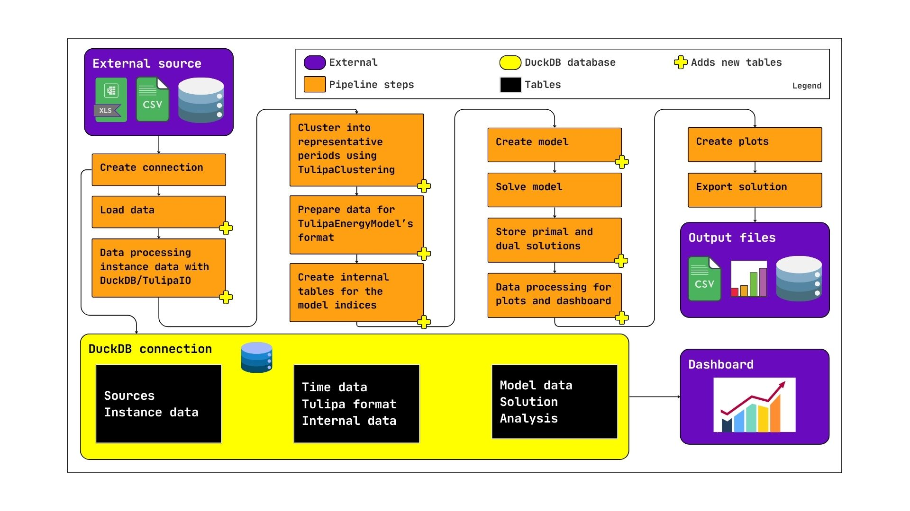

Analysis Workflow
In this section we will look at the analysis workflow and data-handling in more detail, explaining what you need to go from raw data to analysis results.
Workflow overview
Here is a snapshot overview of a regular workflow:

Workflow explanation (follow the boxes):
- External source: The first thing that you need, and hopefully have, is data. Currently, Tulipa does not provide any public data sources, so you need to load all required data.
- Create connection: Tulipa uses a DuckDB database to store the input data, the representation of variables, constraints, and other internal tables, as well as the output. This database is linked through the
connectionargument in various parts of the API. Most notably,run_scenarioandEnergyProblemreceive theconnectionas the main argument to create the model (and various internal tables).- DuckDB connection: This area (yellow) shows which tables are created in DuckDB throughout the workflow.
- Load data: Whether you have CSV/Excel/Parquet files or a separate Database containing your data, you need to load it into the DuckDB connection, i.e., create tables (or table views) with the data that you will process for Tulipa.
- DuckDB connection: These are the
Sourcestables. This data can be in whatever format you want, but you will need to transform it into the Tulipa format later.
- DuckDB connection: These are the
- Process data into an instance (1 model run) with DuckDB/TulipaIO: Now you need to prepare the data for clustering. Even if you don't want to cluster your data, you still need to run
TulipaClustering.dummy_cluster!to generate Tulipa's required tables. Since your data in now inside theconnection, you can useDuckDB's SQL and/orTulipaIO's convenience functions to manipulate it. Another method is to use Julia/Python/Excel to create the data externally (from the source files or DuckDB) and load it back into DuckDB. The important thing is you need to satisfy the TulipaClustering format.- DuckDB connection: These are the
Instance datatables, but it can also be loaded with theSources.
- DuckDB connection: These are the
- Cluster into representative periods using TulipaClustering: Run TulipaClustering to compute the representative periods and create the necessary tables.
- DuckDB connection: These are the
Time datatables. The tables created in this step are part of the cluster group (see Groups of tables below)
- DuckDB connection: These are the
- Prepare data for TulipaEnergyModel's format: Process your data (using
TulipaIO,DuckDBor whatever method you choose) into the Tulipa Format, following the schema. Since the format is quite extensive, you might want to use thepopulate_with_defaults!function to generate all columns and work from there. See Minimum data and using defaults for more details.- DuckDB connection: TulipaEnergyModel expects the
Time datatables from the previous step and theseTulipa formattables. In rare instances, your data will be complete, but most likely you will need to fill-out your tables with default values for columns that are not important for your problem. The tables prepared in this step are part of theinputgroup of tables.
- DuckDB connection: TulipaEnergyModel expects the
- Create internal tables for the model indices: Finally, you're ready to use TulipaEnergyModel! There are multiple ways to create and solve the model, but the idea is the same. The first interaction with Tulipa will create the tables to store the variables, constraints, and expressions indices, as well as other necessary internal tables. Data validation also checks that the tables follow the expected requirements.
- DuckDB connection: These are the
Internal datatables. Notably, the variables and constraints indices tables are created in their respective groups:variablesandconstraints. See the Groups of tables section for more details.
- DuckDB connection: These are the
- Create model: This is most of the heavy-lifting of the workflow, apart from solving the model. This step creates all the Julia/JuMP structures using the tables from the previous step. For instance, a JuMP variable is created for each row of each variable table.
- DuckDB connection: Very little data is created in DuckDB in this step. Some expressions that could not have been created before are created in the
expressionsgroup. A lot of Julia/JuMP-specific things are created, but they cannot be stored in the DuckDB connection.
- DuckDB connection: Very little data is created in DuckDB in this step. Some expressions that could not have been created before are created in the
- Solve model: Finally, send the model to the solver and wait for a result.
- Store primal and dual solutions: This step computes the dual variables and then loads the values of the primals and duals into the
variablesandconstraintstables.- DuckDB connection: Technically, no new tables are created in this step. Instead, new columns are attached to the
variablesandconstraintstables.
- DuckDB connection: Technically, no new tables are created in this step. Instead, new columns are attached to the
- Process output for plots and dashboard: Now prepare the output that you need, once again using DuckDB/TulipaIO. You can also export the data from
DuckDBand continue your analysis with other tools.- DuckDB connection: You might create new
Analysistables. They can be used for the next steps or for a possible dashboard connected to the DuckDB connection.
- DuckDB connection: You might create new
- Create plots: Optionally create plots.
- Export solution: Optionally export all the tables from the DuckDB connection to files, and/or create and save plots.
- Output files: External. Whatever outputs you have produced and want to export to other formats. For instance, CSV/Parquet files with the full variables and constraints tables can be exported from the corresponding DuckDB tables.
- Dashboard: A possible dashboard connecting directly to the DuckDB connection.
Minimum data and using defaults
Since TulipaEnergyModel is at a late stage in the workflow, its input data requirements are stricter. Therefore, the input data required by the Tulipa model must follow the schema in the follow section.
Dealing with defaults is hard. A missing value might represent two different things to different people. That is why we require the tables to be complete. However, we also understand that it is not reasonable to expect people to fill a lot of things that they don't need for their models. Therefore, we have created the function populate_with_defaults! to fill the remaining columns of your tables with default values.
To know the defaults, check the Table Schemas below.
When data is missing and you automatically fill it with defaults, beware of your assumptions on what that means. For instance, maybe you expect the default capacity to be "unlimited", or maybe you expect it to be 0. Check what are the default values and decide if you want to use them or not. If you think a default does not make sense, open an issue, or a discussion thread.
Example of using populate_with_defaults!
Below we have the minimum amount of data (essentially, nothing), that is necessary to start Tulipa.
using TulipaEnergyModel, TulipaIO, DuckDB, DataFrames
data = Dict(
# Basic asset data
"asset" => DataFrame(
:asset => ["some_producer", "some_consumer"],
:type => ["producer", "consumer"],
),
"asset_both" => DataFrame(
:asset => ["some_producer", "some_consumer"],
:commission_year => [2030, 2030],
:milestone_year => [2030, 2030],
),
"asset_commission" => DataFrame(
:asset => ["some_producer", "some_consumer"],
:commission_year => [2030, 2030],
),
"asset_milestone" => DataFrame(
:asset => ["some_producer", "some_consumer"],
:milestone_year => [2030, 2030],
),
# Basic flow data
"flow" => DataFrame(:from_asset => ["some_producer"], :to_asset => ["some_consumer"]),
"flow_both" => DataFrame(
:from_asset => String[],
:to_asset => String[],
:commission_year => Int[],
:milestone_year => Int[],
),
"flow_commission" => DataFrame(
:from_asset => ["some_producer"],
:to_asset => ["some_consumer"],
:commission_year => [2030],
),
"flow_milestone" => DataFrame(
:from_asset => ["some_producer"],
:to_asset => ["some_consumer"],
:milestone_year => [2030],
),
# Basic time information
"year_data" => DataFrame(:year => [2030]),
"rep_periods_data" => DataFrame(:year => [2030, 2030], :rep_period => [1, 2]),
"timeframe_data" => DataFrame(:year => 2030, :period => 1:365),
"rep_periods_mapping" =>
DataFrame(:year => 2030, :period => 1:365, :rep_period => mod1.(1:365, 2)),
)Dict{String, DataFrames.DataFrame} with 12 entries:
"asset_both" => 2×3 DataFrame…
"flow_milestone" => 1×3 DataFrame…
"year_data" => 1×1 DataFrame…
"asset_milestone" => 2×2 DataFrame…
"flow_both" => 0×4 DataFrame…
"asset_commission" => 2×2 DataFrame…
"rep_periods_mapping" => 365×3 DataFrame…
"rep_periods_data" => 2×2 DataFrame…
"asset" => 2×2 DataFrame…
"flow" => 1×2 DataFrame…
"flow_commission" => 1×3 DataFrame…
"timeframe_data" => 365×2 DataFrame…And here we load this data into a DuckDB connection.
connection = DBInterface.connect(DuckDB.DB)
# Loading the minimum data in the connection
for (table_name, table) in data
DuckDB.register_data_frame(connection, table, table_name)
end
# Table `asset`:
DuckDB.query(connection, "FROM asset") |> DataFrame| Row | asset | type |
|---|---|---|
| String | String | |
| 1 | some_producer | producer |
| 2 | some_consumer | consumer |
Now we run populate_with_defaults! to fill the remaining columns with default values:
TulipaEnergyModel.populate_with_defaults!(connection)
DuckDB.query(connection, "FROM asset") |> DataFrame| Row | asset | type | capacity | capacity_storage_energy | consumer_balance_sense | discount_rate | economic_lifetime | energy_to_power_ratio | investment_group | investment_integer | investment_integer_storage_energy | investment_method | is_seasonal | max_ramp_down | max_ramp_up | min_operating_point | ramping | storage_method_energy | technical_lifetime | unit_commitment | unit_commitment_integer | unit_commitment_method | use_binary_storage_method |
|---|---|---|---|---|---|---|---|---|---|---|---|---|---|---|---|---|---|---|---|---|---|---|---|
| String | String | Float64 | Float64 | String | Float64 | Int32 | Float64 | String? | Bool | Bool | String | Bool | Float64 | Float64 | Float64 | Bool | Bool | Int32 | Bool | Bool | String? | String? | |
| 1 | some_producer | producer | 0.0 | 0.0 | == | 0.0 | 1 | 0.0 | missing | false | false | none | false | 0.0 | 0.0 | 0.0 | false | false | 1 | false | false | missing | missing |
| 2 | some_consumer | consumer | 0.0 | 0.0 | == | 0.0 | 1 | 0.0 | missing | false | false | none | false | 0.0 | 0.0 | 0.0 | false | false | 1 | false | false | missing | missing |
You can see that the table above has been modified to include many more columns.
Finally, the problem can be solved:
energy_problem = TulipaEnergyModel.run_scenario(
connection;
output_folder = mktempdir(),
show_log = false,
)
DuckDB.query(connection, "FROM var_flow LIMIT 5") |> DataFrame| Row | id | from_asset | to_asset | year | rep_period | capacity_coefficient | conversion_coefficient | time_block_start | time_block_end | solution |
|---|---|---|---|---|---|---|---|---|---|---|
| Int64 | String | String | Int32 | Int32 | Float64 | Float64 | Int32 | Int32 | Float64 | |
| 1 | 1 | some_producer | some_consumer | 2030 | 1 | 1.0 | 1.0 | 1 | 1 | 0.0 |
| 2 | 2 | some_producer | some_consumer | 2030 | 1 | 1.0 | 1.0 | 2 | 2 | 0.0 |
| 3 | 3 | some_producer | some_consumer | 2030 | 1 | 1.0 | 1.0 | 3 | 3 | 0.0 |
| 4 | 4 | some_producer | some_consumer | 2030 | 1 | 1.0 | 1.0 | 4 | 4 | 0.0 |
| 5 | 5 | some_producer | some_consumer | 2030 | 1 | 1.0 | 1.0 | 5 | 5 | 0.0 |
Groups of tables
After creating a connection and loading data in a way that follows the schema (see the previous section on minimum data), then Tulipa will create tables to handle the model data and various internal tables. There are different groups of tables, which we explain below. See the Workflow overview to see where they pop up.
- Required by TulipaEnergyModel. These are described in the Table Schemas.
cluster: Tables created byTulipaClustering.input: Tables expected byTulipaEnergyModel.
- Created by TulipaEnergyModel.
variables: Variable indices. These tables are prefixed byvar_in the DuckDB connection.constraints: Constraints indices. These tables are prefixed bycons_in the DuckDB connection.expressions: Expressions indices. These tables are prefixed byexpr_in the DuckDB connection.resolution: Unrolled partition blocks of assets and flows. These tables are prefixed by eitherasset_time_resolution_orflow_time_resolution_.
Additionally, we create various temporary tables, which are prefixed by t_.
The tables created by TulipaEnergyModel might change in name or prefix unless explicitly noted. Once Tulipa 1.0 is released, we might change this policy.
You probably don't have to navigate these tables yourself, but if you want more information, you can list them all from DuckDB using the duckdb_tables() table. Here are 10 random tables:
DuckDB.query(
connection,
"SELECT table_name
FROM duckdb_tables()
WHERE table_name NOT LIKE 't_%'
ORDER BY random() LIMIT 10"
) |> DataFrame| Row | table_name |
|---|---|
| String | |
| 1 | cons_min_energy_over_clustered_year |
| 2 | cons_capacity_outgoing_simple_method_non_investable_storage_with_binary |
| 3 | cons_flows_relationships |
| 4 | cons_dc_power_flow |
| 5 | var_flow |
| 6 | asset_both |
| 7 | merged_in_flows |
| 8 | assets_timeframe_profiles |
| 9 | flows_profiles |
| 10 | var_assets_investment |